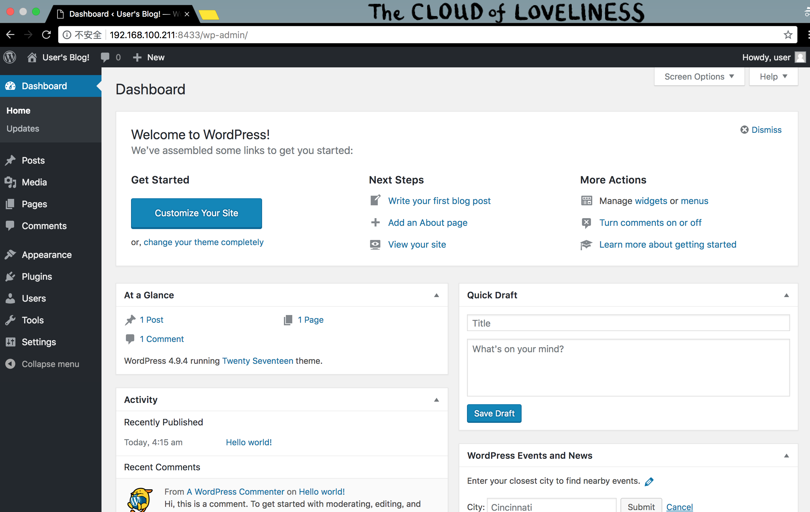

- Kubernetes 应用部署的挑战
Kubernetes 应用部署的挑战
Helm 是 Kubernetes 生态系统中的一个软件包管理工具。本文将介绍 Helm 中的相关概念和基本工作原理，并通过一个具体的示例学习如何使用 Helm 打包、分发、安装、升级及回退 Kubernetes 应用。
Kubernetes 是一个提供了基于容器的应用集群管理解决方案，Kubernetes 为容器化应用提供了部署运行、资源调度、服务发现和动态伸缩等一系列完整功能。
Kubernetes 的核心设计理念是: 用户定义要部署的应用程序的规则，而 Kubernetes 则负责按照定义的规则部署并运行应用程序。如果应用程序出现问题导致偏离了定义的规格，Kubernetes 负责对其进行自动修正。例如：定义的应用规则要求部署两个实例（Pod），其中一个实例异常终止了，Kubernetes 会检查到并重新启动一个新的实例。
用户通过使用 Kubernetes API 对象来描述应用程序规则，包括 Pod、Service、Volume、Namespace、ReplicaSet、Deployment、Job等等。一般这些资源对象的定义需要写入一系列的 YAML 文件中，然后通过 Kubernetes 命令行工具 Kubectl 调 Kubernetes API 进行部署。
以一个典型的三层应用 Wordpress 为例，该应用程序就涉及到多个 Kubernetes API 对象，而要描述这些 Kubernetes API 对象就可能要同时维护多个 YAML 文件。

从上图可以看到，在进行 Kubernetes 软件部署时，我们面临下述几个问题：
- 如何管理、编辑和更新这些这些分散的 Kubernetes 应用配置文件。
- 如何把一套相关的配置文件作为一个应用进行管理。
- 如何分发和重用 Kubernetes 的应用配置。
Helm 的出现就是为了很好地解决上面这些问题。
Helm 是什么
Helm 是 Deis 开发的一个用于 Kubernetes 应用的包管理工具，主要用来管理 Charts。有点类似于 Ubuntu 中的 APT 或 CentOS 中的 YUM。
Helm Chart 是用来封装 Kubernetes 原生应用程序的一系列 YAML 文件。可以在你部署应用的时候自定义应用程序的一些 Metadata，以便于应用程序的分发。
对于应用发布者而言，可以通过 Helm 打包应用、管理应用依赖关系、管理应用版本并发布应用到软件仓库。
对于使用者而言，使用 Helm 后不用需要编写复杂的应用部署文件，可以以简单的方式在 Kubernetes 上查找、安装、升级、回滚、卸载应用程序。
Helm 组件及相关术语
- Helm
Helm 是一个命令行下的客户端工具。主要用于 Kubernetes 应用程序 Chart 的创建、打包、发布以及创建和管理本地和远程的 Chart 仓库。
- Tiller
Tiller 是 Helm 的服务端，部署在 Kubernetes 集群中。Tiller 用于接收 Helm 的请求，并根据 Chart 生成 Kubernetes 的部署文件（ Helm 称为 Release ），然后提交给 Kubernetes 创建应用。Tiller 还提供了 Release 的升级、删除、回滚等一系列功能。
- Chart
Helm 的软件包，采用 TAR 格式。类似于 APT 的 DEB 包或者 YUM 的 RPM 包，其包含了一组定义 Kubernetes 资源相关的 YAML 文件。
- Repoistory
Helm 的软件仓库，Repository 本质上是一个 Web 服务器，该服务器保存了一系列的 Chart 软件包以供用户下载，并且提供了一个该 Repository 的 Chart 包的清单文件以供查询。Helm 可以同时管理多个不同的 Repository。
- Release
使用 helm install 命令在 Kubernetes 集群中部署的 Chart 称为 Release。
注：需要注意的是：Helm 中提到的 Release 和我们通常概念中的版本有所不同，这里的 Release 可以理解为 Helm 使用 Chart 包部署的一个应用实例。
Helm 工作原理
这张图描述了 Helm 的几个关键组件 Helm（客户端）、Tiller（服务器）、Repository（Chart 软件仓库）、Chart（软件包）之间的关系。

Chart Install 过程
- Helm 从指定的目录或者 TAR 文件中解析出 Chart 结构信息。
- Helm 将指定的 Chart 结构和 Values 信息通过 gRPC 传递给 Tiller。
- Tiller 根据 Chart 和 Values 生成一个 Release。
- Tiller 将 Release 发送给 Kubernetes 用于生成 Release。
Chart Update 过程
- Helm 从指定的目录或者 TAR 文件中解析出 Chart 结构信息。
- Helm 将需要更新的 Release 的名称、Chart 结构和 Values 信息传递给 Tiller。
- Tiller 生成 Release 并更新指定名称的 Release 的 History。
- Tiller 将 Release 发送给 Kubernetes 用于更新 Release。
Chart Rollback 过程
- Helm 将要回滚的 Release 的名称传递给 Tiller。
- Tiller 根据 Release 的名称查找 History。
- Tiller 从 History 中获取上一个 Release。
- Tiller 将上一个 Release 发送给 Kubernetes 用于替换当前 Release。
Chart 处理依赖说明
Tiller 在处理 Chart 时，直接将 Chart 以及其依赖的所有 Charts 合并为一个 Release，同时传递给 Kubernetes。因此 Tiller 并不负责管理依赖之间的启动顺序。Chart 中的应用需要能够自行处理依赖关系。
部署 Helm
安装 Helm 客户端
Helm 的安装方式很多，这里采用二进制的方式安装。更多安装方法可以参考 Helm 的官方帮助文档。
- 使用官方提供的脚本一键安装
# curl https://raw.githubusercontent.com/kubernetes/helm/master/scripts/get > get_helm.sh
# chmod 700 get_helm.sh
# ./get_helm.sh
- 手动下载安装
# 下载 Helm
$ wget https://storage.googleapis.com/kubernetes-helm/helm-v2.9.1-linux-amd64.tar.gz
# 解压 Helm
$ tar -zxvf helm-v2.9.1-linux-amd64.tar.gz
# 复制客户端执行文件到 bin 目录下
$ cp linux-amd64/helm /usr/local/bin/
注：storage.googleapis.com 默认是不能访问的，该问题请自行解决。
安装 Helm 服务器端 Tiller
Tiller 是以 Deployment 方式部署在 Kubernetes 集群中的，只需使用以下指令便可简单的完成安装。
# helm init
由于 Helm 默认会去 storage.googleapis.com 拉取镜像，如果你当前执行的机器不能访问该域名的话可以使用以下命令来安装：
# 使用阿里云镜像安装并把默认仓库设置为阿里云上的镜像仓库
$ helm init --upgrade --tiller-image registry.cn-hangzhou.aliyuncs.com/google_containers/tiller:v2.9.1 --stable-repo-url https://kubernetes.oss-cn-hangzhou.aliyuncs.com/charts
- 给 Tiller 授权
因为 Helm 的服务端 Tiller 是一个部署在 Kubernetes 中 Kube-System Namespace 下 的 Deployment，它会去连接 Kube-Api 在 Kubernetes 里创建和删除应用。
而从 Kubernetes 1.6 版本开始，API Server 启用了 RBAC 授权。目前的 Tiller 部署时默认没有定义授权的 ServiceAccount，这会导致访问 API Server 时被拒绝。所以我们需要明确为 Tiller 部署添加授权。
- 创建 Kubernetes 的服务帐号和绑定角色
$ kubectl get deployment --all-namespaces
NAMESPACE NAME DESIRED CURRENT UP-TO-DATE AVAILABLE AGE
kube-system tiller-deploy 1 1 1 1 1h
$ kubectl create serviceaccount --namespace kube-system tiller
$ kubectl create clusterrolebinding tiller-cluster-rule --clusterrole=cluster-admin --serviceaccount=kube-system:tiller
- 为 Tiller 设置帐号
# 使用 kubectl patch 更新 API 对象
$ kubectl patch deploy --namespace kube-system tiller-deploy -p '{"spec":{"template":{"spec":{"serviceAccount":"tiller"}}}}'
deployment.extensions "tiller-deploy" patched
- 查看是否授权成功
$ kubectl get deploy --namespace kube-system tiller-deploy --output yaml|grep serviceAccount
serviceAccount: tiller
serviceAccountName: tiller
- 验证 Tiller 是否安装成功
$ kubectl -n kube-system get pods|grep tiller
tiller-deploy-6d68f5c78f-nql2z 1/1 Running 0 5m
$ helm version
Client: &version.Version{SemVer:"v2.9.1", GitCommit:"20adb27c7c5868466912eebdf6664e7390ebe710", GitTreeState:"clean"}
Server: &version.Version{SemVer:"v2.9.1", GitCommit:"20adb27c7c5868466912eebdf6664e7390ebe710", GitTreeState:"clean"}
卸载 Helm 服务器端 Tiller
如果你需要在 Kubernetes 中卸载已部署的 Tiller，可使用以下命令完成卸载。
# helm reset
构建一个 Helm Chart
下面我们通过一个完整的示例来学习如何使用 Helm 创建、打包、分发、安装、升级及回退Kubernetes应用。
创建一个名为 mychart 的 Chart
# helm create mychart
该命令创建了一个 mychart 目录，该目录结构如下所示。这里我们主要关注目录中的 Chart.yaml、values.yaml、NOTES.txt 和 Templates 目录。
$ tree mychart/
mychart/
├── charts
├── Chart.yaml
├── templates
│ ├── deployment.yaml
│ ├── _helpers.tpl
│ ├── ingress.yaml
│ ├── NOTES.txt
│ └── service.yaml
└── values.yaml
2 directories, 7 files
- Chart.yaml 用于描述这个 Chart的相关信息，包括名字、描述信息以及版本等。
- values.yaml 用于存储 templates 目录中模板文件中用到变量的值。
- NOTES.txt 用于介绍 Chart 部署后的一些信息，例如：如何使用这个 Chart、列出缺省的设置等。
- Templates 目录下是 YAML 文件的模板，该模板文件遵循 Go template 语法。
Templates 目录下 YAML 文件模板的值默认都是在 values.yaml 里定义的，比如在 deployment.yaml 中定义的容器镜像。
image: ":"
其中的 .Values.image.repository 的值就是在 values.yaml 里定义的 nginx，.Values.image.tag 的值就是 stable。
$ cat mychart/values.yaml|grep repository
repository: nginx
$ cat mychart/values.yaml|grep tag
tag: stable
以上两个变量值是在 create chart 的时候就自动生成的默认值，你可以根据实际情况进行修改。
如果你需要了解更多关于 Go 模板的相关信息，可以查看 Hugo 的一个关于 Go 模板 的介绍。
编写应用的介绍信息
打开 Chart.yaml, 填写你部署的应用的详细信息，以 mychart 为例：
$ cat mychart/Chart.yaml
apiVersion: v1
appVersion: "1.0"
description: A Helm chart for Kubernetes
name: mychart
version: 0.1.0
编写应用具体部署信息
编辑 values.yaml，它默认会在 Kubernetes 部署一个 Nginx。下面是 mychart 应用的 values.yaml 文件的内容：
$ cat mychart/values.yaml
# Default values for mychart.
# This is a YAML-formatted file.
# Declare variables to be passed into your templates.
replicaCount: 1
image:
repository: nginx
tag: stable
pullPolicy: IfNotPresent
service:
type: ClusterIP
port: 80
ingress:
enabled: false
annotations: {}
# kubernetes.io/ingress.class: nginx
# kubernetes.io/tls-acme: "true"
path: /
hosts:
- chart-example.local
tls: []
# - secretName: chart-example-tls
# hosts:
# - chart-example.local
resources: {}
# We usually recommend not to specify default resources and to leave this as a conscious
# choice for the user. This also increases chances charts run on environments with little
# resources, such as Minikube. If you do want to specify resources, uncomment the following
# lines, adjust them as necessary, and remove the curly braces after 'resources:'.
# limits:
# cpu: 100m
# memory: 128Mi
# requests:
# cpu: 100m
# memory: 128Mi
nodeSelector: {}
tolerations: []
affinity: {}
检查依赖和模板配置是否正确
$ helm lint mychart/
==> Linting .
[INFO] Chart.yaml: icon is recommended
1 chart(s) linted, no failures
如果文件格式错误，可以根据提示进行修改。
将应用打包
$ helm package mychart
Successfully packaged chart and saved it to: /home/k8s/mychart-0.1.0.tgz
mychart 目录会被打包为一个 mychart-0.1.0.tgz 格式的压缩包，该压缩包会被放到当前目录下，并同时被保存到了 Helm 的本地缺省仓库目录中。
如果你想看到更详细的输出，可以加上 --debug 参数来查看打包的输出，输出内容应该类似如下：
$ helm package mychart --debug
Successfully packaged chart and saved it to: /home/k8s/mychart-0.1.0.tgz
[debug] Successfully saved /home/k8s/mychart-0.1.0.tgz to /home/k8s/.helm/repository/local
将应用发布到 Repository
虽然我们已经打包了 Chart 并发布到了 Helm 的本地目录中，但通过 helm search 命令查找，并不能找不到刚才生成的 mychart包。
$ helm search mychart
No results found
这是因为 Repository 目录中的 Chart 包还没有被 Helm 管理。通过 helm repo list 命令可以看到目前 Helm 中已配置的 Repository 的信息。
$ helm repo list
NAME URL
stable https://kubernetes.oss-cn-hangzhou.aliyuncs.com/charts
注：新版本中执行 helm init 命令后默认会配置一个名为 local 的本地仓库。
我们可以在本地启动一个 Repository Server，并将其加入到 Helm Repo 列表中。Helm Repository 必须以 Web 服务的方式提供，这里我们就使用 helm serve 命令启动一个 Repository Server，该 Server 缺省使用 $HOME/.helm/repository/local 目录作为 Chart 存储，并在 8879 端口上提供服务。
$ helm serve &
Now serving you on 127.0.0.1:8879
默认情况下该服务只监听 127.0.0.1，如果你要绑定到其它网络接口，可使用以下命令：
# helm serve --address 192.168.100.211:8879 &
如果你想使用指定目录来做为 Helm Repository 的存储目录，可以加上 --repo-path 参数：
# helm serve --address 192.168.100.211:8879 --repo-path /data/helm/repository/ --url http://192.168.100.211:8879/charts/
通过 helm repo index 命令将 Chart 的 Metadata 记录更新在 index.yaml 文件中:
# 更新 Helm Repository 的索引文件
$ cd /home/k8s/.helm/repository/local
$ helm repo index --url=http://192.168.100.211:8879 .
完成启动本地 Helm Repository Server 后，就可以将本地 Repository 加入 Helm 的 Repo 列表。
$ helm repo add local http://127.0.0.1:8879
"local" has been added to your repositories
现在再次查找 mychart 包，就可以搜索到了。
$ helm repo update
$ helm search mychart
NAME CHART VERSION APP VERSION DESCRIPTION
local/mychart 0.1.0 1.0 A Helm chart for Kubernetes
在 Kubernetes 中部署应用
部署一个应用
Chart 被发布到仓储后，就可以通过 helm install 命令部署该 Chart。
- 检查配置和模板是否有效 当使用 helm install 命令部署应用时，实际上就是将 templates 目录下的模板文件渲染成 Kubernetes 能够识别的 YAML 格式。
在部署前我们可以使用 helm install --dry-run --debug
$ helm install --dry-run --debug local/mychart --name mike-test
[debug] Created tunnel using local port: '46649'
[debug] SERVER: "127.0.0.1:46649"
[debug] Original chart version: ""
[debug] Fetched local/mychart to /home/k8s/.helm/cache/archive/mychart-0.1.0.tgz
[debug] CHART PATH: /home/k8s/.helm/cache/archive/mychart-0.1.0.tgz
NAME: mike-test
REVISION: 1
RELEASED: Mon Jul 23 10:39:49 2018
CHART: mychart-0.1.0
USER-SUPPLIED VALUES:
{}
COMPUTED VALUES:
affinity: {}
image:
pullPolicy: IfNotPresent
repository: nginx
tag: stable
ingress:
annotations: {}
enabled: false
hosts:
- chart-example.local
path: /
tls: []
nodeSelector: {}
replicaCount: 1
resources: {}
service:
port: 80
type: ClusterIP
tolerations: []
HOOKS:
MANIFEST:
---
# Source: mychart/templates/service.yaml
apiVersion: v1
kind: Service
metadata:
name: mike-test-mychart
labels:
app: mychart
chart: mychart-0.1.0
release: mike-test
heritage: Tiller
spec:
type: ClusterIP
ports:
- port: 80
targetPort: http
protocol: TCP
name: http
selector:
app: mychart
release: mike-test
---
# Source: mychart/templates/deployment.yaml
apiVersion: apps/v1beta2
kind: Deployment
metadata:
name: mike-test-mychart
labels:
app: mychart
chart: mychart-0.1.0
release: mike-test
heritage: Tiller
spec:
replicas: 1
selector:
matchLabels:
app: mychart
release: mike-test
template:
metadata:
labels:
app: mychart
release: mike-test
spec:
containers:
- name: mychart
image: "nginx:stable"
imagePullPolicy: IfNotPresent
ports:
- name: http
containerPort: 80
protocol: TCP
livenessProbe:
httpGet:
path: /
port: http
readinessProbe:
httpGet:
path: /
port: http
resources:
{}
验证完成没有问题后，我们就可以使用以下命令将其部署到 Kubernetes 上了。
# 部署时需指定 Chart 名及 Release（部署的实例）名。
$ helm install local/mychart --name mike-test
NAME: mike-test
LAST DEPLOYED: Mon Jul 23 10:41:20 2018
NAMESPACE: default
STATUS: DEPLOYED
RESOURCES:
==> v1/Service
NAME TYPE CLUSTER-IP EXTERNAL-IP PORT(S) AGE
mike-test-mychart ClusterIP 10.254.120.177 <none> 80/TCP 1s
==> v1beta2/Deployment
NAME DESIRED CURRENT UP-TO-DATE AVAILABLE AGE
mike-test-mychart 1 0 0 0 0s
==> v1/Pod(related)
NAME READY STATUS RESTARTS AGE
mike-test-mychart-6d56f8c8c9-d685v 0/1 Pending 0 0s
NOTES:
1. Get the application URL by running these commands:
export POD_NAME=$(kubectl get pods --namespace default -l "app=mychart,release=mike-test" -o jsonpath="{.items[0].metadata.name}")
echo "Visit http://127.0.0.1:8080 to use your application"
kubectl port-forward $POD_NAME 8080:80
注：helm install 默认会用到 socat，需要在所有节点上安装 socat 软件包。
完成部署后，现在 Nginx 就已经部署到 Kubernetes 集群上。在本地主机上执行提示中的命令后，就可在本机访问到该 Nginx 实例。
# export POD_NAME=$(kubectl get pods --namespace default -l "app=mychart,release=mike-test" -o jsonpath="{.items[0].metadata.name}")
$ echo "Visit http://127.0.0.1:8080 to use your application"
$ kubectl port-forward $POD_NAME 8080:80
在本地访问 Nginx
$ curl http://127.0.0.1:8080
.....
<title>Welcome to nginx!</title>
<body>
<h1>Welcome to nginx!</h1>
<p>If you see this page, the nginx web server is successfully installed and
working. Further configuration is required.</p>
......
使用下面的命令列出的所有已部署的 Release 以及其对应的 Chart。
# helm list
NAME REVISION UPDATED STATUS CHART NAMESPACE
mike-test 1 Mon Jul 23 10:41:20 2018 DEPLOYED mychart-0.1.0 default
你还可以使用 helm status 查询一个特定的 Release 的状态。
$ helm status mike-test
LAST DEPLOYED: Mon Jul 23 10:41:20 2018
NAMESPACE: default
STATUS: DEPLOYED
RESOURCES:
==> v1/Pod(related)
NAME READY STATUS RESTARTS AGE
mike-test-mychart-6d56f8c8c9-d685v 1/1 Running 0 1m
==> v1/Service
NAME TYPE CLUSTER-IP EXTERNAL-IP PORT(S) AGE
mike-test-mychart ClusterIP 10.254.120.177 <none> 80/TCP 1m
==> v1beta2/Deployment
NAME DESIRED CURRENT UP-TO-DATE AVAILABLE AGE
mike-test-mychart 1 1 1 1 1m
NOTES:
1. Get the application URL by running these commands:
export POD_NAME=$(kubectl get pods --namespace default -l "app=mychart,release=mike-test" -o jsonpath="{.items[0].metadata.name}")
echo "Visit http://127.0.0.1:8080 to use your application"
kubectl port-forward $POD_NAME 8080:80
升级和回退一个应用
从上面 helm list 输出的结果中我们可以看到有一个 Revision（更改历史）字段，该字段用于表示某一个 Release 被更新的次数，我们可以用该特性对已部署的 Release 进行回滚。
- 修改 Chart.yaml 文件
将版本号从 0.1.0 修改为 0.2.0, 然后使用 helm package 命令打包并发布到本地仓库。
$ cat mychart/Chart.yaml
apiVersion: v1
appVersion: "1.0"
description: A Helm chart for Kubernetes
name: mychart
version: 0.2.0
$ helm package mychart
Successfully packaged chart and saved it to: /home/k8s/mychart-0.2.0.tgz
- 查询本地仓库中的 Chart 信息
我们可以看到在本地仓库中 mychart 有两个版本。
$ helm search mychart -l
NAME CHART VERSION APP VERSION DESCRIPTION
local/mychart 0.2.0 1.0 A Helm chart for Kubernetes
local/mychart 0.1.0 1.0 A Helm chart for Kubernetes
- 升级一个应用 现在用 helm upgrade 命令将已部署的 mike-test 升级到新版本。你可以通过 --version 参数指定需要升级的版本号，如果没有指定版本号，则缺省使用最新版本。
$ helm upgrade mike-test local/mychart
Release "mike-test" has been upgraded. Happy Helming!
LAST DEPLOYED: Mon Jul 23 10:50:25 2018
NAMESPACE: default
STATUS: DEPLOYED
RESOURCES:
==> v1/Pod(related)
NAME READY STATUS RESTARTS AGE
mike-test-mychart-6d56f8c8c9-d685v 1/1 Running 0 9m
==> v1/Service
NAME TYPE CLUSTER-IP EXTERNAL-IP PORT(S) AGE
mike-test-mychart ClusterIP 10.254.120.177 <none> 80/TCP 9m
==> v1beta2/Deployment
NAME DESIRED CURRENT UP-TO-DATE AVAILABLE AGE
mike-test-mychart 1 1 1 1 9m
NOTES:
1. Get the application URL by running these commands:
export POD_NAME=$(kubectl get pods --namespace default -l "app=mychart,release=mike-test" -o jsonpath="{.items[0].metadata.name}")
echo "Visit http://127.0.0.1:8080 to use your application"
kubectl port-forward $POD_NAME 8080:80
完成后，可以看到已部署的 mike-test 被升级到 0.2.0 版本。
$ helm list
NAME REVISION UPDATED STATUS CHART NAMESPACE
mike-test 2 Mon Jul 23 10:50:25 2018 DEPLOYED mychart-0.2.0 default
- 回退一个应用 如果更新后的程序由于某些原因运行有问题，需要回退到旧版本的应用。首先我们可以使用 helm history 命令查看一个 Release 的所有变更记录。
$ helm history mike-test
REVISION UPDATED STATUS CHART DESCRIPTION
1 Mon Jul 23 10:41:20 2018 SUPERSEDED mychart-0.1.0 Install complete
2 Mon Jul 23 10:50:25 2018 DEPLOYED mychart-0.2.0 Upgrade complete
其次，我们可以使用下面的命令对指定的应用进行回退。
$ helm rollback mike-test 1
Rollback was a success! Happy Helming!
注：其中的参数 1 是 helm history 查看到 Release 的历史记录中 REVISION 对应的值。
最后，我们使用 helm list 和 helm history 命令都可以看到 mychart 的版本已经回退到 0.1.0 版本。
$ helm list
NAME REVISION UPDATED STATUS CHART NAMESPACE
mike-test 3 Mon Jul 23 10:53:42 2018 DEPLOYED mychart-0.1.0 default
$ helm history mike-test
REVISION UPDATED STATUS CHART DESCRIPTION
1 Mon Jul 23 10:41:20 2018 SUPERSEDED mychart-0.1.0 Install complete
2 Mon Jul 23 10:50:25 2018 SUPERSEDED mychart-0.2.0 Upgrade complete
3 Mon Jul 23 10:53:42 2018 DEPLOYED mychart-0.1.0 Rollback to 1
- 删除一个应用 如果需要删除一个已部署的 Release，可以利用 helm delete 命令来完成删除。
$ helm delete mike-test
release "mike-test" deleted
确认应用是否删除，该应用已被标记为 DELETED 状态。
$ helm ls -a mike-test
NAME REVISION UPDATED STATUS CHART NAMESPACE
mike-test 3 Mon Jul 23 10:53:42 2018 DELETED mychart-0.1.0 default
也可以使用 --deleted 参数来列出已经删除的 Release
$ helm ls --deleted
NAME REVISION UPDATED STATUS CHART NAMESPACE
mike-test 3 Mon Jul 23 10:53:42 2018 DELETED mychart-0.1.0 default
从上面的结果也可以看出，默认情况下已经删除的 Release 只是将状态标识为 DELETED 了 ，但该 Release 的历史信息还是继续被保存的。
$ helm hist mike-test
REVISION UPDATED STATUS CHART DESCRIPTION
1 Mon Jul 23 10:41:20 2018 SUPERSEDED mychart-0.1.0 Install complete
2 Mon Jul 23 10:50:25 2018 SUPERSEDED mychart-0.2.0 Upgrade complete
3 Mon Jul 23 10:53:42 2018 DELETED mychart-0.1.0 Deletion complete
如果要移除指定 Release 所有相关的 Kubernetes 资源和 Release 的历史记录，可以用如下命令：
$ helm delete --purge mike-test
release "mike-test" deleted
再次查看已删除的 Release，已经无法找到相关信息。
$ helm hist mike-test
Error: release: "mike-test" not found
# helm ls 命令也已均无查询记录。
$ helm ls --deleted
$ helm ls -a mike-test
Helm 部署应用实例
部署 Wordpress
这里以一个典型的三层应用 Wordpress 为例，包括 MySQL、PHP 和 Apache。
由于测试环境没有可用的 PersistentVolume（持久卷，简称 PV），这里暂时将其关闭。关于 Persistent Volumes 的相关信息我们会在后续的相关文章进行讲解。
$ helm install --name wordpress-test --set "persistence.enabled=false,mariadb.persistence.enabled=false,serviceType=NodePort" stable/wordpress
NAMESPACE: default
STATUS: DEPLOYED
RESOURCES:
==> v1beta1/Deployment
NAME DESIRED CURRENT UP-TO-DATE AVAILABLE AGE
wordpress-test-mariadb 1 1 1 1 26m
wordpress-test-wordpress 1 1 1 1 26m
==> v1/Pod(related)
NAME READY STATUS RESTARTS AGE
wordpress-test-mariadb-84b866bf95-n26ff 1/1 Running 1 26m
wordpress-test-wordpress-5ff8c64b6c-sgtvv 1/1 Running 6 26m
==> v1/Secret
NAME TYPE DATA AGE
wordpress-test-mariadb Opaque 2 26m
wordpress-test-wordpress Opaque 2 26m
==> v1/ConfigMap
NAME DATA AGE
wordpress-test-mariadb 1 26m
wordpress-test-mariadb-tests 1 26m
==> v1/Service
NAME TYPE CLUSTER-IP EXTERNAL-IP PORT(S) AGE
wordpress-test-mariadb ClusterIP 10.254.99.67 <none> 3306/TCP 26m
wordpress-test-wordpress NodePort 10.254.175.16 <none> 80:8563/TCP,443:8839/TCP 26m
NOTES:
1. Get the WordPress URL:
Or running:
export NODE_PORT=$(kubectl get --namespace default -o jsonpath="{.spec.ports[0].nodePort}" services wordpress-test-wordpress)
export NODE_IP=$(kubectl get nodes --namespace default -o jsonpath="{.items[0].status.addresses[0].address}")
echo http://$NODE_IP:$NODE_PORT/admin
2. Login with the following credentials to see your blog
echo Username: user
echo Password: $(kubectl get secret --namespace default wordpress-test-wordpress -o jsonpath="{.data.wordpress-password}" | base64 --decode)
访问 Wordpress
部署完成后，我们可以通过上面的提示信息生成相应的访问地址和用户名、密码等相关信息。
# 生成 Wordpress 管理后台地址
$ export NODE_PORT=$(kubectl get --namespace default -o jsonpath="{.spec.ports[0].nodePort}" services wordpress-test-wordpress)
$ export NODE_IP=$(kubectl get nodes --namespace default -o jsonpath="{.items[0].status.addresses[0].address}")
$ echo http://$NODE_IP:$NODE_PORT/admin
http://192.168.100.211:8433/admin
# 生成 Wordpress 管理帐号和密码
$ echo Username: user
Username: user
$ echo Password: $(kubectl get secret --namespace default wordpress-test-wordpress -o jsonpath="{.data.wordpress-password}" | base64 --decode)
Password: 9jEXJgnVAY
给一张访问效果图吧：

Helm 其它使用技巧
- 如何设置 helm 命令自动补全？ 为了方便 helm 命令的使用，Helm 提供了自动补全功能，如果使用 ZSH 请执行：
# source <(helm completion zsh)
如果使用 BASH 请执行：
# source <(helm completion bash)
- 如何使用第三方的 Chart 存储库？ 随着 Helm 越来越普及，除了使用预置官方存储库，三方仓库也越来越多了（前提是网络是可达的）。你可以使用如下命令格式添加三方 Chart 存储库。
# helm repo add 存储库名 存储库URL
$ helm repo update
一些三方存储库资源:
# Prometheus Operator
https://github.com/coreos/prometheus-operator/tree/master/helm
# Bitnami Library for Kubernetes
https://github.com/bitnami/charts
# Openstack-Helm
https://github.com/att-comdev/openstack-helm
https://github.com/sapcc/openstack-helm
# Tick-Charts
https://github.com/jackzampolin/tick-charts
- Helm 如何结合 CI/CD ？
采用 Helm 可以把零散的 Kubernetes 应用配置文件作为一个 Chart 管理，Chart 源码可以和源代码一起放到 Git 库中管理。通过把 Chart 参数化，可以在测试环境和生产环境采用不同的 Chart 参数配置。
下图是采用了 Helm 的一个 CI/CD 流程

- Helm 如何管理多环境下 (Test、Staging、Production) 的业务配置？
Chart 是支持参数替换的，可以把业务配置相关的参数设置为模板变量。使用 helm install 命令部署的时候指定一个参数值文件，这样就可以把业务参数从 Chart 中剥离了。例如： helm install --values=values-production.yaml wordpress。
- Helm 如何解决服务依赖？
在 Chart 里可以通过 requirements.yaml 声明对其它 Chart 的依赖关系。如下面声明表明 Chart 依赖 Apache 和 MySQL 这两个第三方 Chart。
dependencies:
- name: mariadb
version: 2.1.1
repository: https://kubernetes-charts.storage.googleapis.com/
condition: mariadb.enabled
tags:
- wordpress-database
- name: apache
version: 1.4.0
repository: https://kubernetes-charts.storage.googleapis.com/
- 如何让 Helm 连接到指定 Kubernetes 集群？
Helm 默认使用和 kubectl 命令相同的配置访问 Kubernetes 集群，其配置默认在 ~/.kube/config 中。
- 如何在部署时指定命名空间？
helm install 默认情况下是部署在 default 这个命名空间的。如果想部署到指定的命令空间，可以加上 --namespace 参数，比如：
# helm install local/mychart --name mike-test --namespace mynamespace
- 如何查看已部署应用的详细信息？
# helm get wordpress-test
默认情况下会显示最新的版本的相关信息，如果想要查看指定发布版本的信息可加上 --revision 参数。
# helm get --revision 1 wordpress-test